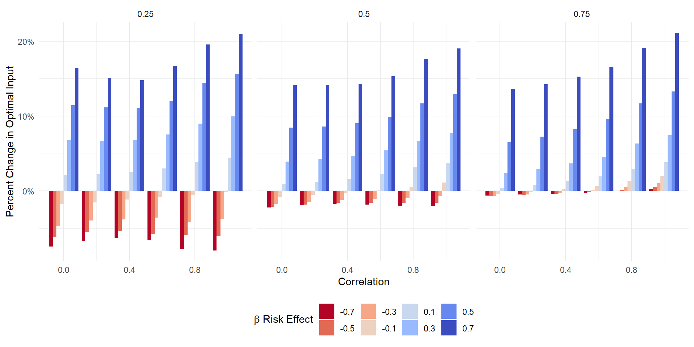
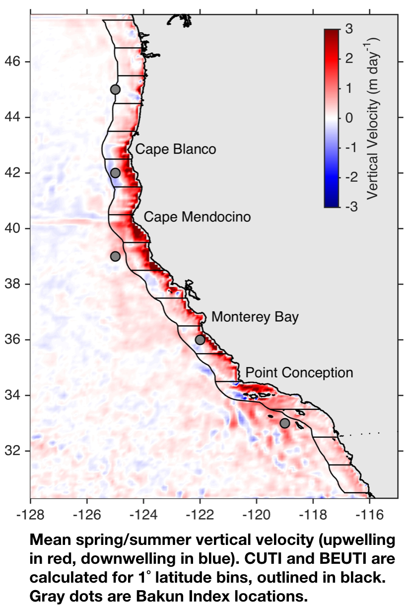
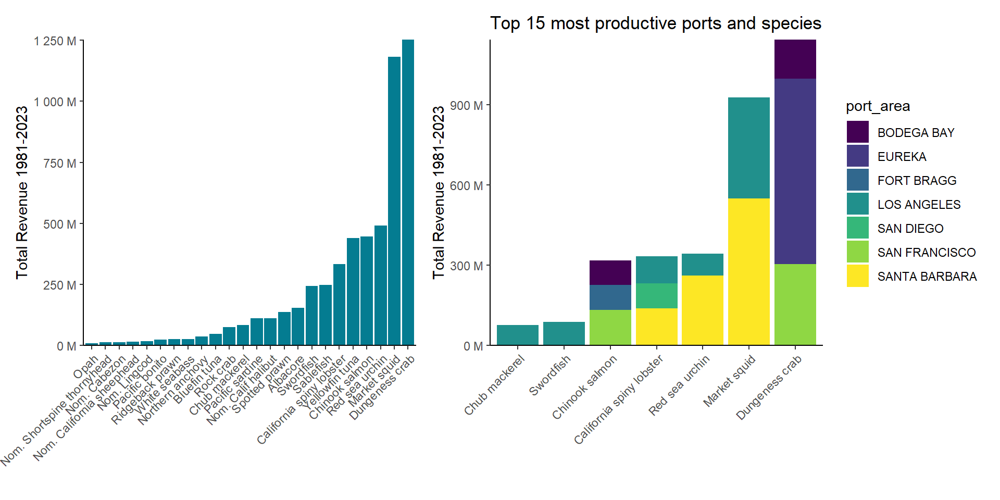
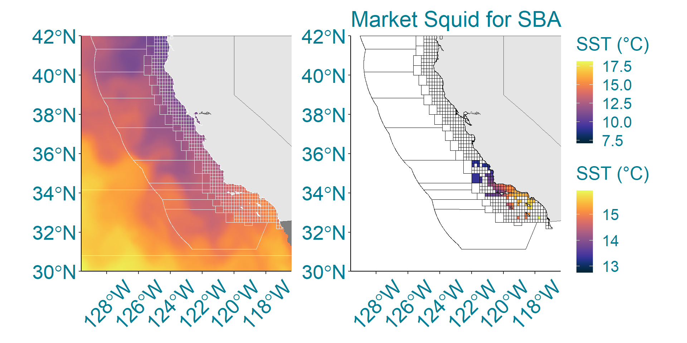
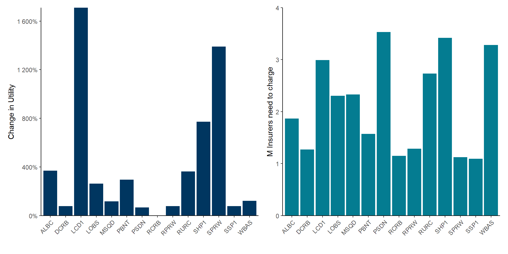
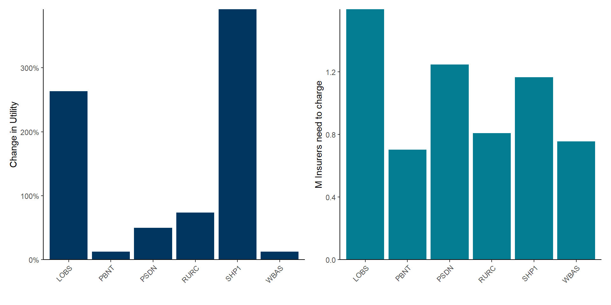
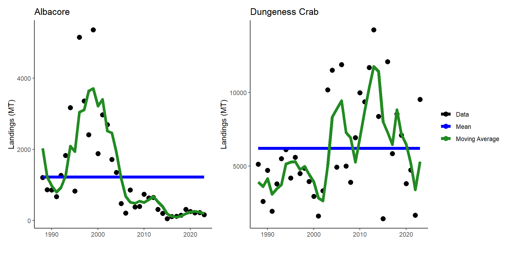
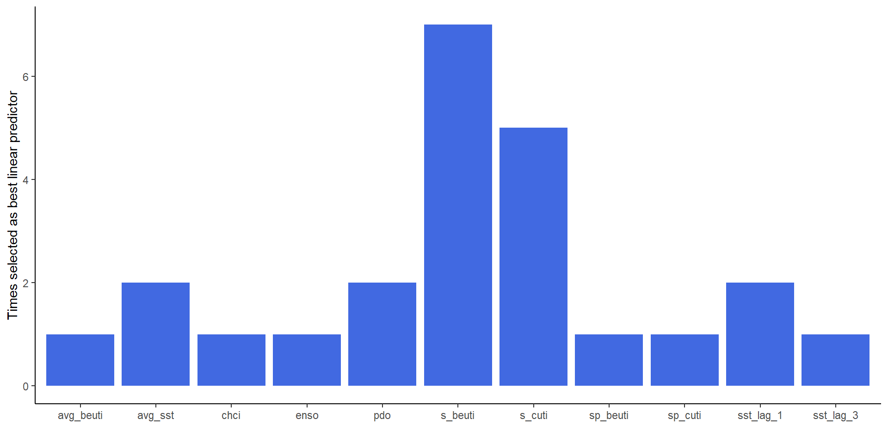
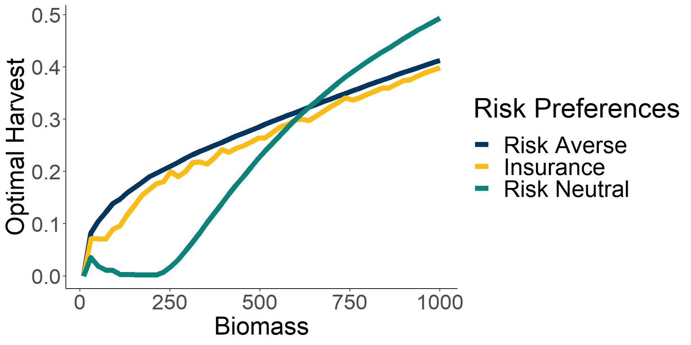
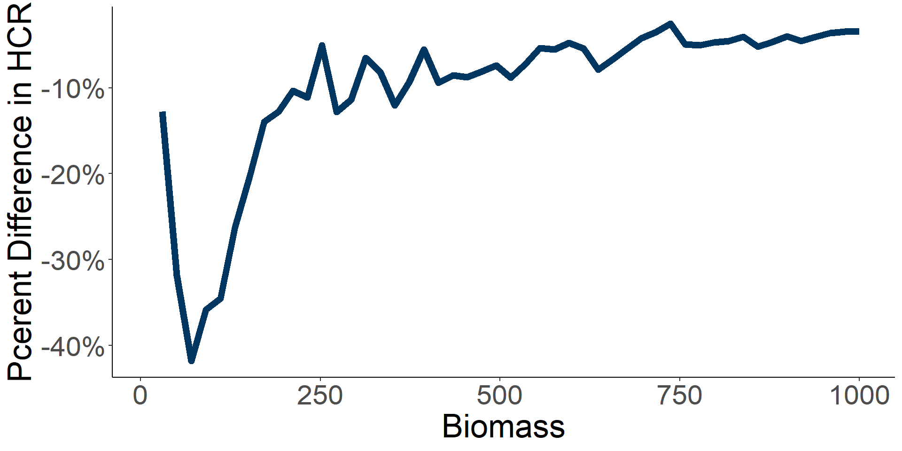

| Weather Index | Mean | SD | Temporal Resolution | Spatial Resolution | Source |
|---|---|---|---|---|---|
| CUTI | 0.5 | 0.3 | Monthly | 1 degree latitude | Jacox et al., 2018 |
| BEUTI | 4.1 | 3.9 | Monthly | 1 degree latitude | Jacox et al., 2018 |
| Cummulative Habitat Compression Index | 4.8 | 2.3 | Yearly | 3 degree latitude | Integrated Ecosytem Assessment |
| Sea Surface Temperature | 14.2 | 2.0 | Monthly | 5x5 km | NOAA Coral Bleaching Degree Heating Week |
| ENSO | -0.1 | 0.7 | Monthly | Regional | MEI.v2 |
| Pacific Decadal Oscillation | -0.3 | 1.0 | Monthly | Regional | PDO ERSST V5 |
Suitability of Index Insurance in Fisheries
Committee Update
Nathaniel Grimes
Bren School of Environmental Science & Management
Last updated: Nov 08, 2024
Behavioral Effects of Index Insurance
Update on Fishery Just-Pope Reformulation
- Fishers can mitigate some level of risk, but are exposed to biological risk
\[ y=f(X)\hat\beta+\theta f(X)+\omega h(X) \qquad(1)\]
Possible examples of \(\omega\) and \(h(X)\)
Storms: Larger vessels lower risk and make it easier to fish in foul weather
Spatial: Experienced captains choose more consistent fishing grounds
Two sources of risk introduces basis risk
Insuring against the \(\omega\) still leaves fishers vulnerable to \(\theta\)
The change in input decision depends on how correlated the random variables are
Independent
Risk decreasing will always lower input use
Risk increasing will always increase input use
Perfect Correlation
Risk decreasing inputs are ambiguous
Risk increasing inputs always increase
Results from the Just-Pope Reformulation

Suitable indices for fisheries index insurance
Basis risk is the greatest impediment to index insurance uptake
Definition: Basis Risk - Does the insurance payout when the fisher needs it?
Most programs in agriculture fail or require large subsidies to incentivize uptake
Need to find weather measures that correlate with fisher income/catch
Environmental variables influence catch, but really difficult to measure
- Non-linear, unobservables, management plays a role
How can we design indices to accurately indemnify fishery losses?
1. Would index insurance be a welfare improving innovation in fisheries?
2. What models and types of contracts can improve index insurance for fisheries?
3. What are the most important environmental variables for predicting fishery income?
4. Can fishery index insurance operate in a private market or does it need to be subsidized?
Compare utility improvements with and without insurance
- Predictive power of models is only useful if it improves welfare
\[ \mathbb{E}[U_{ni}]=\frac{1}{n}\sum_{t}^{T}u(\pi_t) \]
\[ \mathbb{E}[U_{i}]=\max_{l_t}\frac{1}{n}\sum_{t}^{T}u(\pi_t+I(\omega,l_t,c)-\rho(w)) \]
\[ U_r=\frac{\mathbb{E}[U_i]-\mathbb{E}[U_b]}{\mathbb{E}[U_b]} \]
\(U_{ni}\): utility no insurance
\(U_i\): utility with insurance
\(\pi_t\): Either revenue, landings, or catch per fisher
- Positive values of \(U_r\) show index insurance is welfare improving and offers a better comparison for contract and model performance
The offered insurance contract depends on the predictive models
Deviation from mean
\[ I(\omega,l_t,c)=\max(0,\bar\pi-\hat{\pi}_t^k(\omega)\cdot c)\cdot l_t \] \(c\): coverage
\(l\): scale
Deviations from Moving Average
\[ I(\omega,l_t,c)=\max(0,\frac{1}{j}\sum^n_{i=n-j+1}\pi_t-\hat{\pi}_t^k(\omega)\cdot c)\cdot l_t \]
\(k\in\{LM,LASSO,RF\}\)
\(j\): number of periods to average
- Insurance payouts when the model trained on environmental variables \(\omega\) predicts a lower catch than the strike level
Premium
Average previous payouts times a loading factor \(m\)
\[ \rho(w)=\mathbb{E}[I(\omega,l_t,c)]m \]
Outline of model
Step 1: Train Model on Data
- Perserve time order and split into training (<2005), validation (2005-2013), and test (>2013) sets.
- Tune hyperparameters on validation setStep 2: Predict payout schedule
- Use model to predict payouts for each year (<2013)Step 3: Fishers choose insurance scale iteratively in each year that would maximize their past utility
- Model updates and retrains each year in the testing set with realization of weather to find new insurance premiums
- Mimics real world decision makingStep 4: Calculate utility in testing sample
Step 5: Find the loading factor insurers would need to break even
- Eventually would like to find an equilibrium decision in step 3Environmental Data Sources
Example of spatial coverage


Fishing data comes from California Department Fish and Wildlife

- Continuous data and average revenue greater than $100,000 between 2010-2019
Match fishing blocks with spatial data

Linear models improve utility, but are outrageously expensive for insurers

Random forests improve prediction and are more cost effective

Mean strike levels might be problematic in fisheries

Future Steps
Extract weather features that most influence the payout schedule
Run rolling average strike models
Robustness checks (different utility, use cali models at the port-level, etc.)

Questions
Management and Index Insurance
Management and insurance both mitigate risk
Management attempts to protect fishers from biological risk
Most risk averse strategy would be to fish the same every year
- Problematic because of biological dynamics that persist
Managers have to change quotas to respond to shocks
Insurance can protect financial risk brought on by necessary changes in quota
Management and Insurance could act as complements or as substitutes
Research Questions
Would a manager change their harvest control rule if fishers were protected by index insurance?
How does the timing of shocks, payouts, and information change decisions?
How better off would a fishery be if it had an index insurance policy?
Parameterize with a real world fishery, and simulate response with new HCR
Sethi et al., 2005 provides a good starting point
Introduces three sources of randomness:
Measurement (\(z^m_t\))
Growth (\(z^g_t\))
Implementation (\(z^i_t\))
- \(h_t=min(x_t,z^i_tq_t)\)
\[ J_t(m_t)=\max_{q_t\ge0}\mathbb{E}[h_t+\alpha J_{t+1}(z^m_{t+1}z^g_{t+1}G(x_t-h_t))] \qquad(2)\]
Combine the uncertainty of Sethi’s model with insurance
Can nicely incorporate insights from Chapter 1
Manager maximizes net present value of utility of fishers
\[ \begin{aligned} &\max_{f_t}&\mathbb{E}[\sum^{\infty}_{t=1}\beta^tU(f_t,B_t,I_{\omega},\omega_t)] \\ &\text{Subject to} &B_{t+1}=\theta_tG(f_t,B_t) \end{aligned} \]
\[ \small{ \begin{aligned} &f_t&\text{Fishing mortality} \\ &B_t &\text{Biomass} \\ &\omega_t &\text{Weather Shock} \end{aligned}} \]
\[ \small{ \begin{aligned} &I_{\omega} &\text{Insurance payout function} \\ &U(...) &\text{Concave Utility}\\ &G(...) &\text{Growth Function} \end{aligned} } \]
Formulate as a Bellman
\[ V_t(B_t,\omega_T)=\max_{f_t}\mathbb{E}[U(f_t,B_t,I_{\omega},\omega_t)+\beta V_{t+1}(\theta_tG(f_t,B_t))] \]
Move the timing of the shock to see how that influences decision making
Perfect estimation of the stock and weather as no impact on current period
Fishers respond to imprecise biomass measurement
Preliminary Results

Relatively large percent changes in harvest
